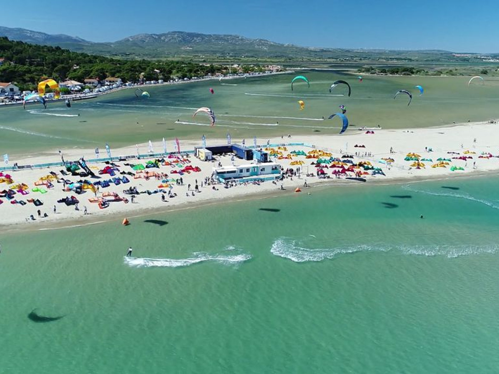
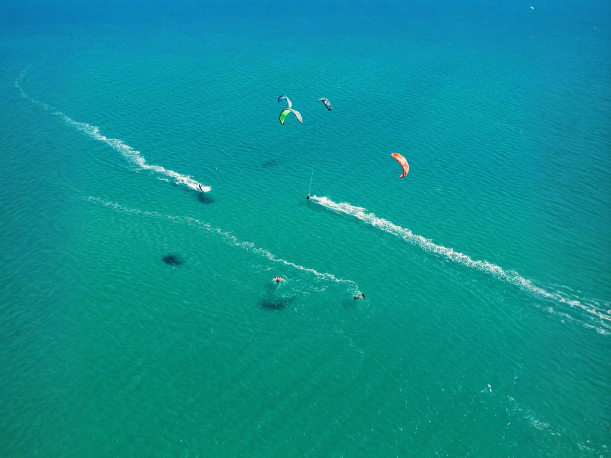
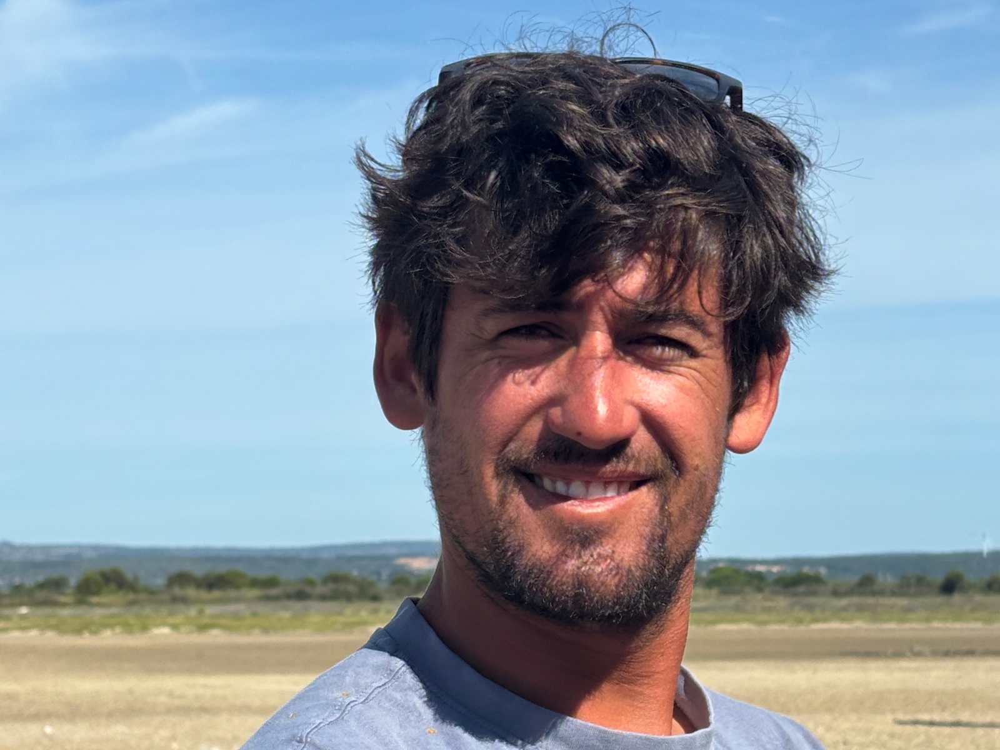
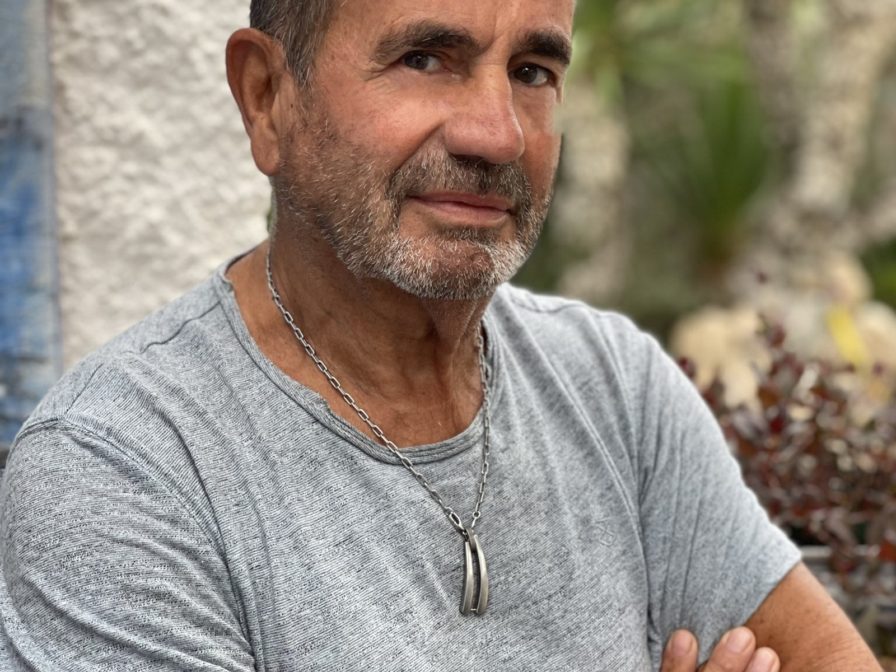
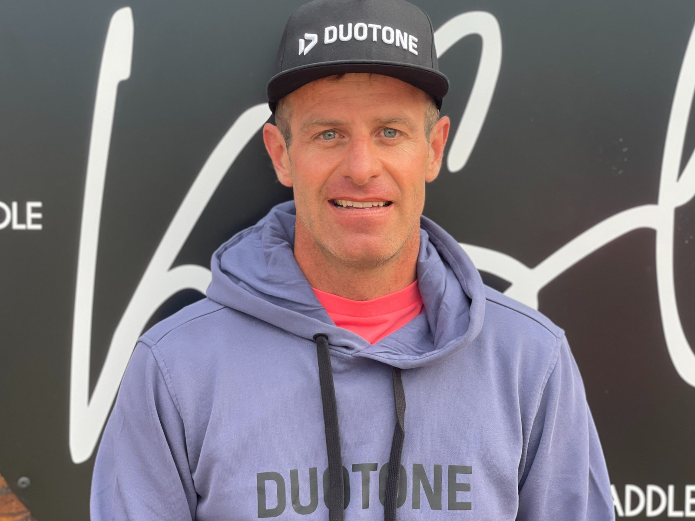
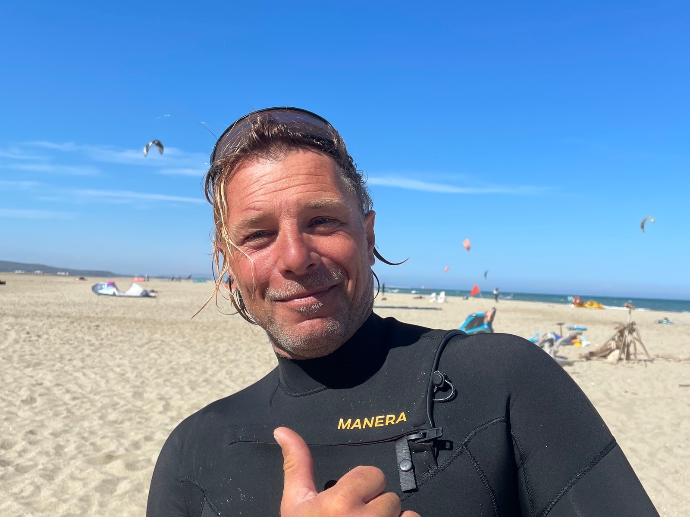
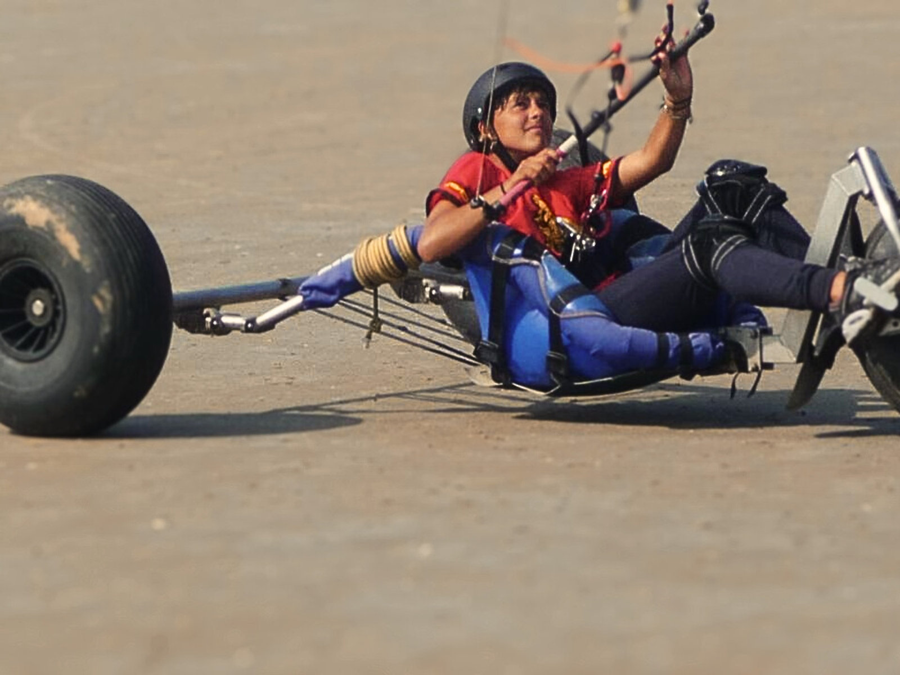
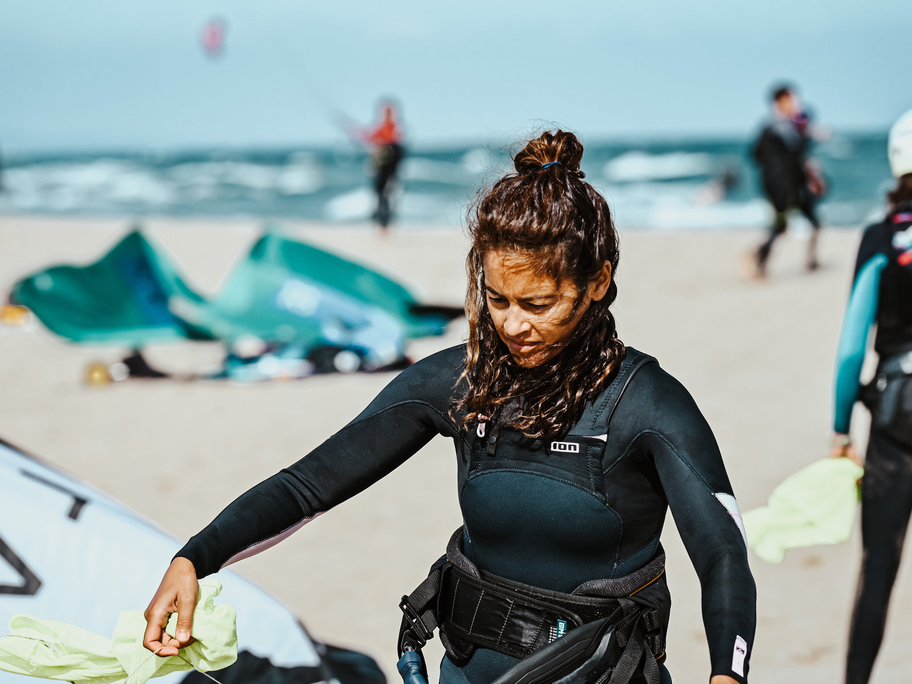
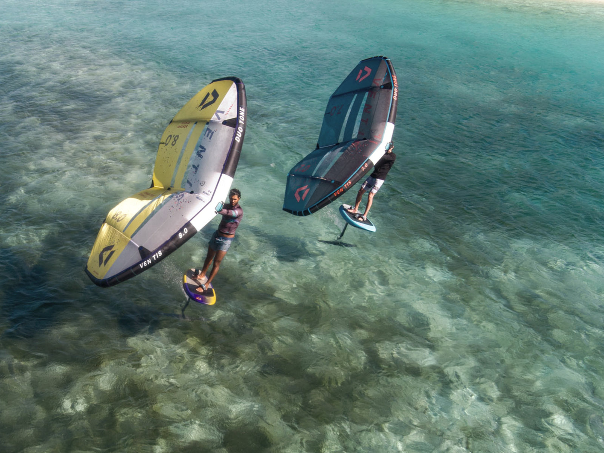
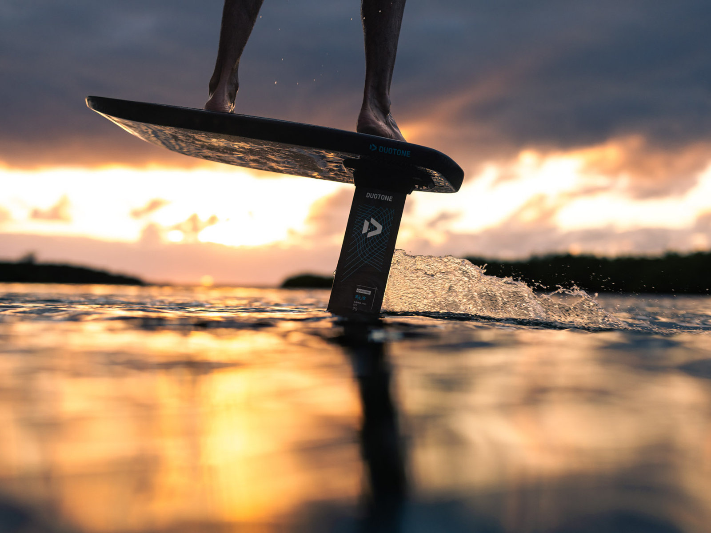

Club & école · Plage des Coussoules · depuis 2004
Depuis 2004, KSL réunit les passionnés autour du spot mythique de La Franqui : découverte, apprentissage, progression, compétition — et une vraie communauté de riders, du premier bord au Pôle Espoir.
Le club

Le spot des Coussoules, vu du cielNé pour structurer le spot
L'association KSL est née en 2004 pour structurer la pratique, sécuriser le site des Coussoules et créer une vraie communauté. Installé dans l'ancien poste de secours, le club accompagne les pratiquants à toutes les étapes : découverte, apprentissage, navigation, progression, compétition.
L'équipe
Bernard à la présidence, Thomas à la base nautique, Guillaume, Cédric, Robin, Thomas et Antoine à l'enseignement, Lilou à l'accueil, Eliot à la sécurité en mer.




L'école
L'école est ouverte tous les jours sur réservation (fermeture annuelle du 15 décembre au 15 janvier). Kitesurf et wing, tous niveaux.
Sur réservationencadrement BPJEPS
Sur réservationla glisse montante
Sur demandeécoles, CE, clubs
En images




Services du club
Le service de sécurité et location est ouvert tous les jours de vent tramontane : d'avril à octobre de 9 h à 17 h, les week-ends jusqu'à 19 h, et jusqu'à 20 h en juillet-août.
Le crew en parle
Questions fréquentes
L'école donne les cours (kitesurf et wing, tous niveaux, sur réservation). Le club anime le spot : sécurité, location kite et SUP, teams, compétition et vie associative. Deux contacts, une même maison.
Tous les jours de vent tramontane : d'avril à octobre de 9 h à 17 h, les week-ends jusqu'à 19 h, juillet-août jusqu'à 20 h.
Le tandem handikite ouvre la glisse aux personnes en situation de handicap, encadré par l'équipe du club. Contactez le club pour organiser une session adaptée.
Oui — c'est même une spécialité du club : teams jeunes débutants et jeunes performance, filière vers le Pôle Espoir kiteboard.
Contact
Deux contacts selon votre besoin : l'école pour les cours, le club pour la sécurité, la location et la vie associative.